Conference & Workshop Papers
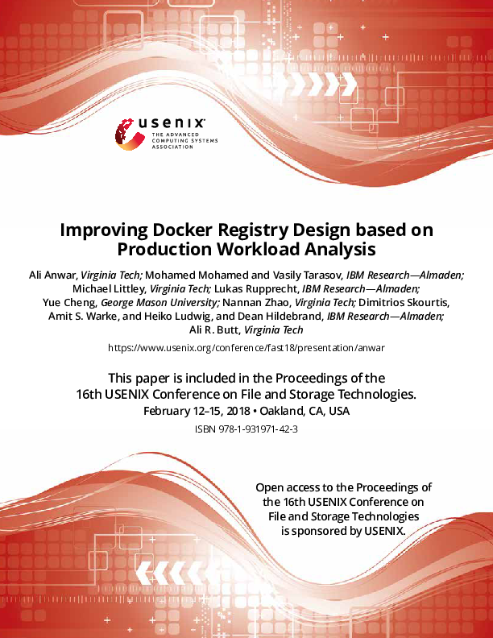
Improving Docker Registry Design based on Production Workload Analysis
Ali Anwar, Mohamed Mohamed, Vasily Tarasov, Michael Littley, Lukas Rupprecht, Yue Cheng, Nannan Zhao, Dimitrios Skourtis, Amit S. Warke
USENIX FAST '18
Code
Traces
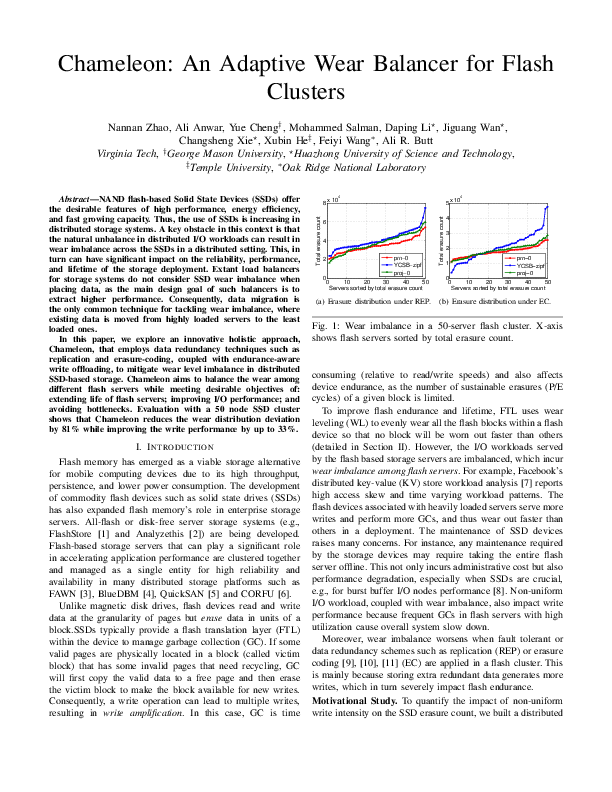
Chameleon: An Adaptive Wear Balancer for Flash Clusters
Nannan Zhao, Ali Anwar, Yue Cheng, Mohammed Salman, Daping Li, Jiguang Wan, Changsheng Xie, Xubin He, Feiyi Wang, Ali R. Butt
IEEE IPDPS '18
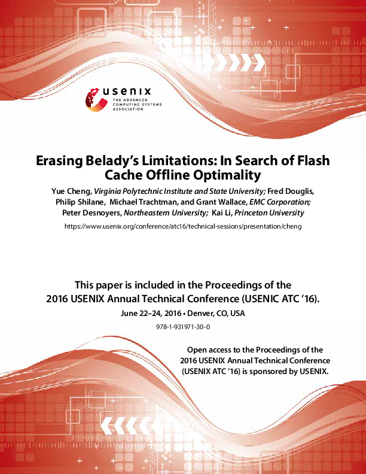
Erasing Belady's Limitations: In Search of Flash Cache Offline Optimality
Yue Cheng, Fred Douglis, Philip Shilane, Michael Trachtman, Grant Wallace, Peter Desnoyers, Kai Li
USENIX ATC '16
Talk
Poster
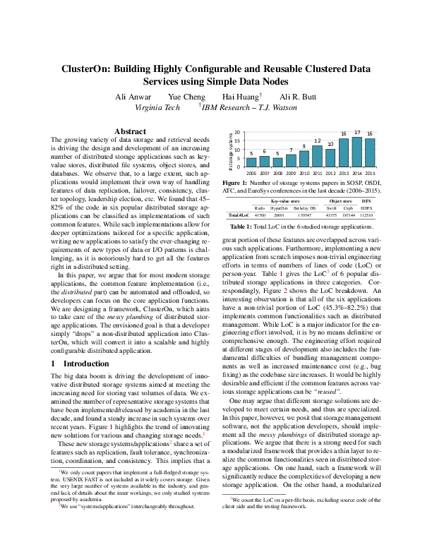
ClusterOn: Building Highly Configurable and Reusable Clustered Data Services using Simple Data Nodes
Ali Anwar, Yue Cheng, Hai Huang, Ali R. Butt
USENIX HotStorage '16
GitHub
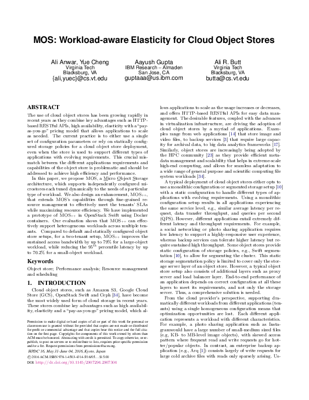
MOS: Workload-aware Elasticity for Cloud Object Stores
Ali Anwar, Yue Cheng, Aayush Gupta, Ali R. Butt
ACM HPDC '16
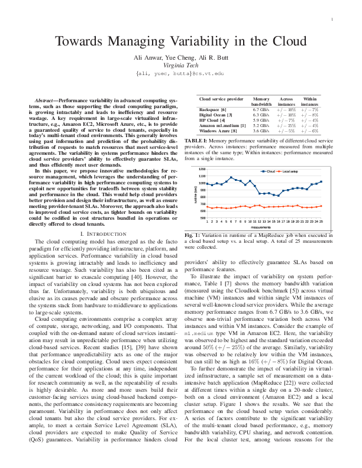
Towards Managing Variability in the Cloud
Ali Anwar, Yue Cheng, Ali R. Butt
IEEE VarSys '16
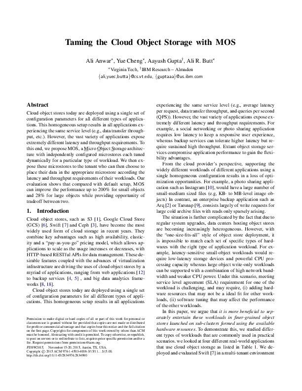
Taming the Cloud Object Storage with MOS
Ali Anwar, Yue Cheng, Aayush Gupta, Ali R. Butt
ACM PDSW '15
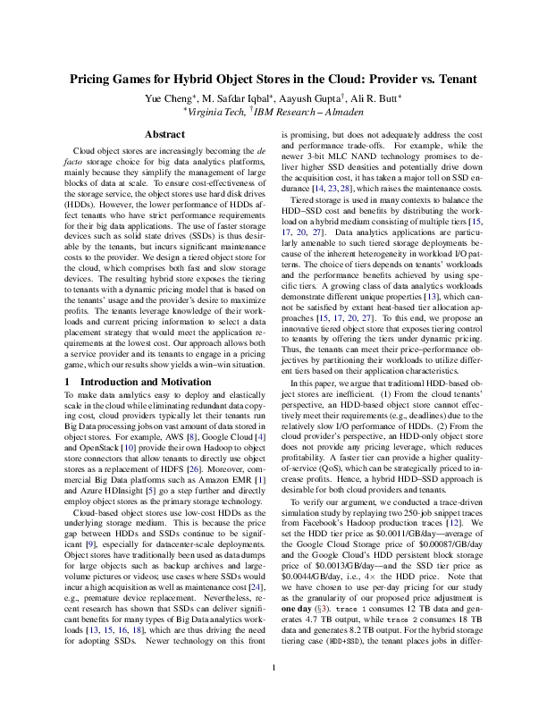
Pricing Games for Hybrid Object Stores in the Cloud: Provider vs. Tenant
Yue Cheng, M. Safdar Iqbal, Aayush Gupta, Ali R. Butt
USENIX HotCloud '15
Talk
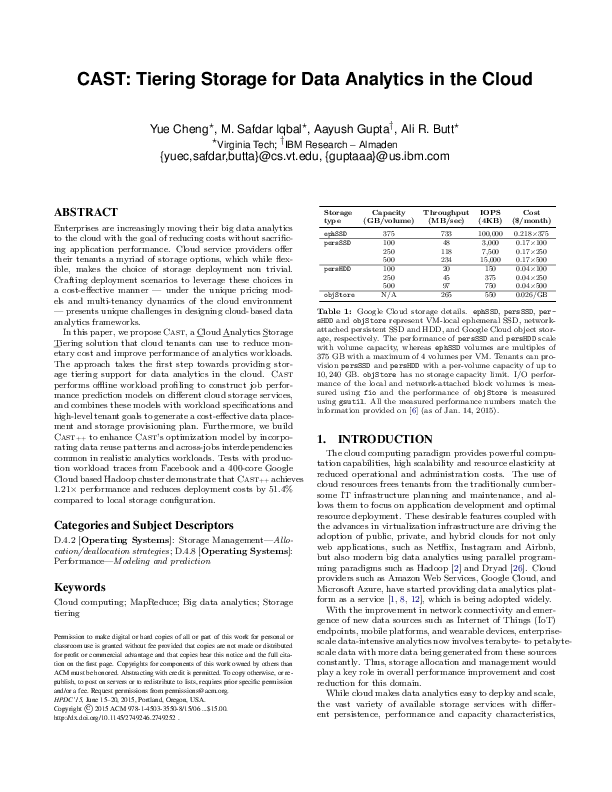
CAST: Tiering Storage for Data Analytics in the Cloud
Yue Cheng, M. Safdar Iqbal, Aayush Gupta, Ali R. Butt
ACM HPDC '15
Slides
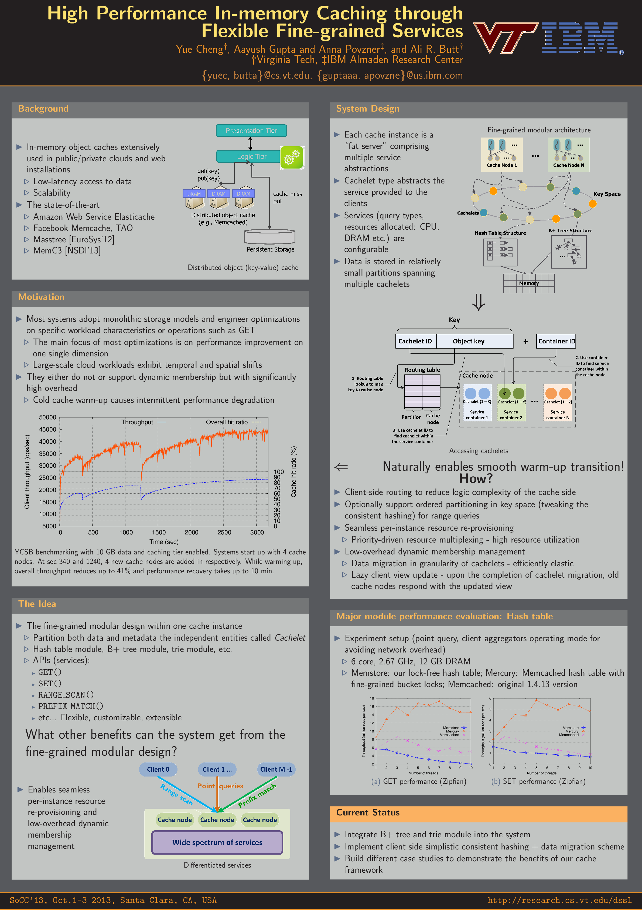
High Performance In-Memory Caching through Flexible Fine-Grained Services
Yue Cheng, Aayush Gupta, Anna Povzner, Ali R. Butt
ACM SoCC '13
Poster
Technical Reports
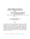
MOANA: Modeling and Analyzing I/O Variability in Parallel System Experimental Design
Kirk W. Cameron, Ali Anwar, Yue Cheng, Bo Li, Li Xu, Ananth Uday, Thomas Lux, Yili Hong, Layne T. Watson, Ali R. Butt
VT CS Technical Report
Journal Articles & Book Chapters
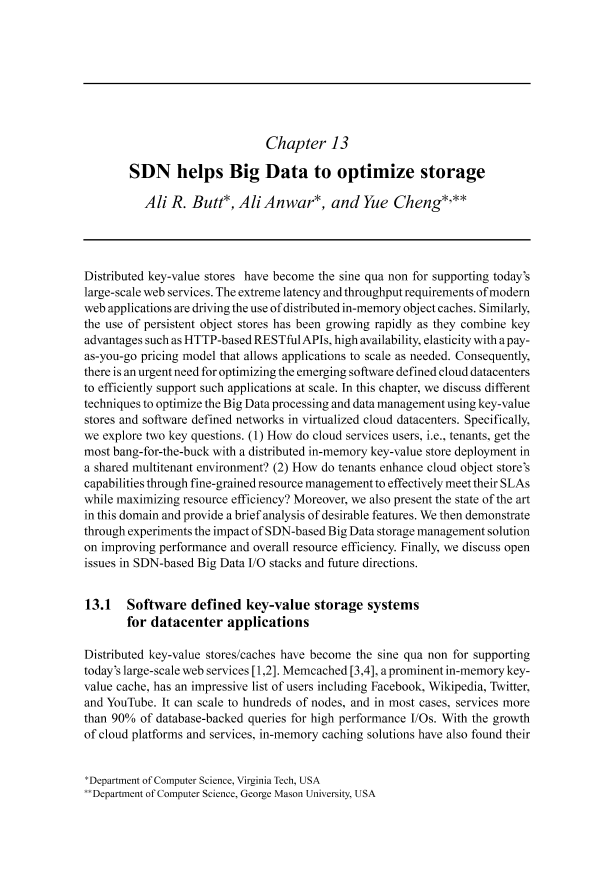
SDN helps Big Data to optimize storage
Ali R. Butt, Ali Anwar, Yue Cheng
Book Chapter, Big Data and Software Defined Networks,
Editor: Javid Taheri. IET, ISBN 978-1-78561-304-3. 2018
Editor: Javid Taheri. IET, ISBN 978-1-78561-304-3. 2018
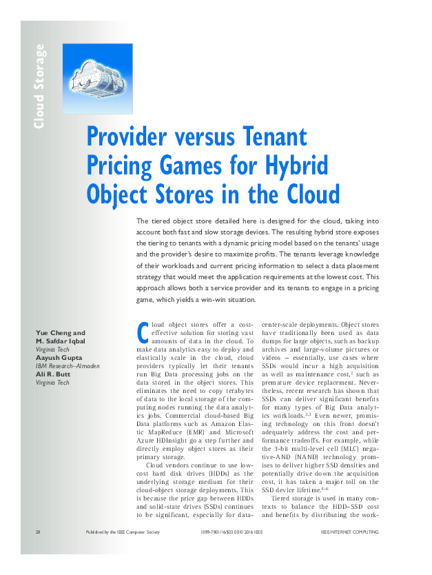
Provider versus Tenant Pricing Games for Hybrid Object Stores in the Cloud
Yue Cheng, M. Safdar Iqbal, Aayush Gupta, Ali R. Butt
IEEE Internet Computing (Special issue: May/June 2016 - Cloud Storage)